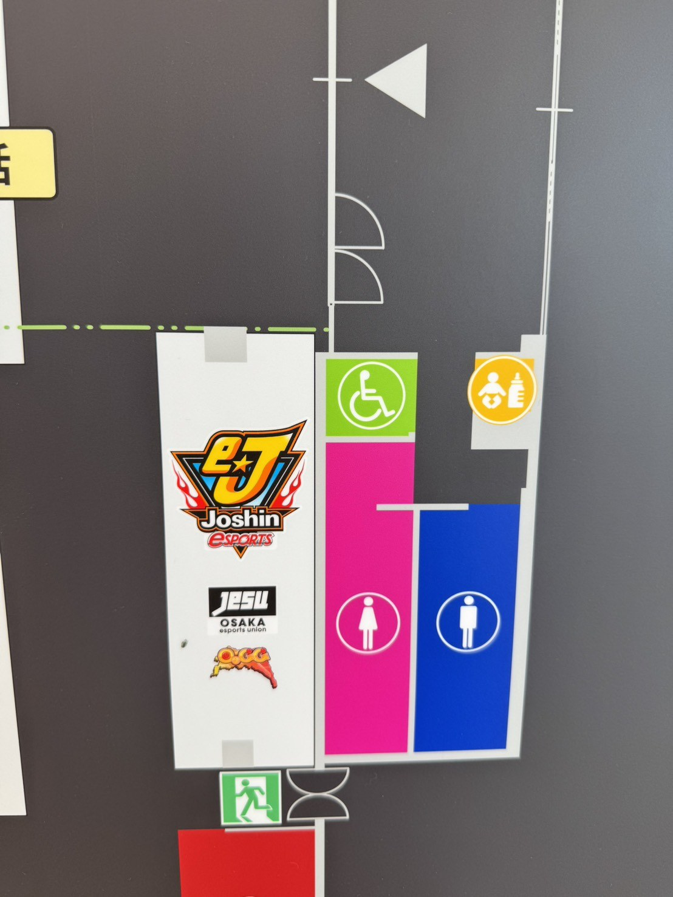

一般社団法人大阪府eスポーツ連合（JeSU大阪）の賛助会員である株式会社Joshinのジョーシン岸和田店（岸和田市）では、1Fのeスポーツコーナーに、JeSU大阪のロゴを掲出いただいています。
コーナーの柱のサインのほか、1Fの店内案内図にも、Joshin eSPORTS、大阪eスポーツラウンドテーブル（OeGG）のロゴと並んで、JeSU大阪のロゴが入っています。


このeスポーツコーナーは、2026年10月24日（土）にリニューアルオープンしました。イベントの開催時にはレーシングシミュレーターを設置するほか、今後はカードゲーム大会なども開かれる予定です（Joshinのお知らせ ）。
Joshinは2026年7月1日に、JeSU大阪の賛助会員として加入しました（加入のお知らせ）。大阪eスポーツラウンドテーブル（OeGG）にもともに参画し、大阪のeスポーツの振興に取り組んでいます。
お近くにお越しの際は、ぜひのぞいてみてください。